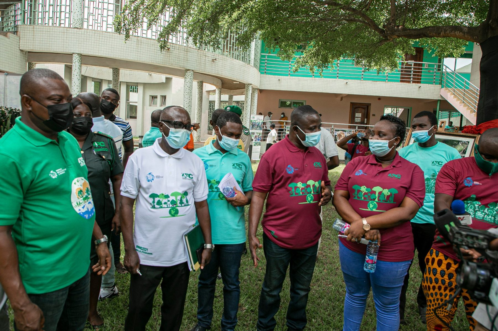
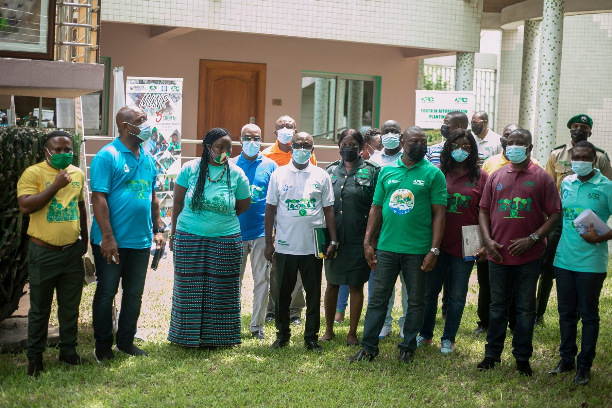
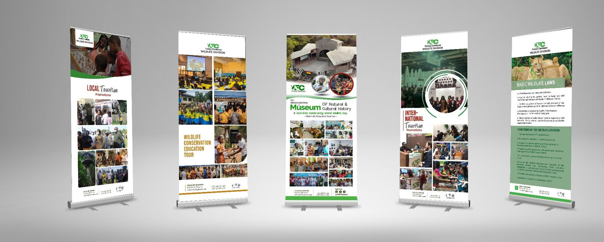
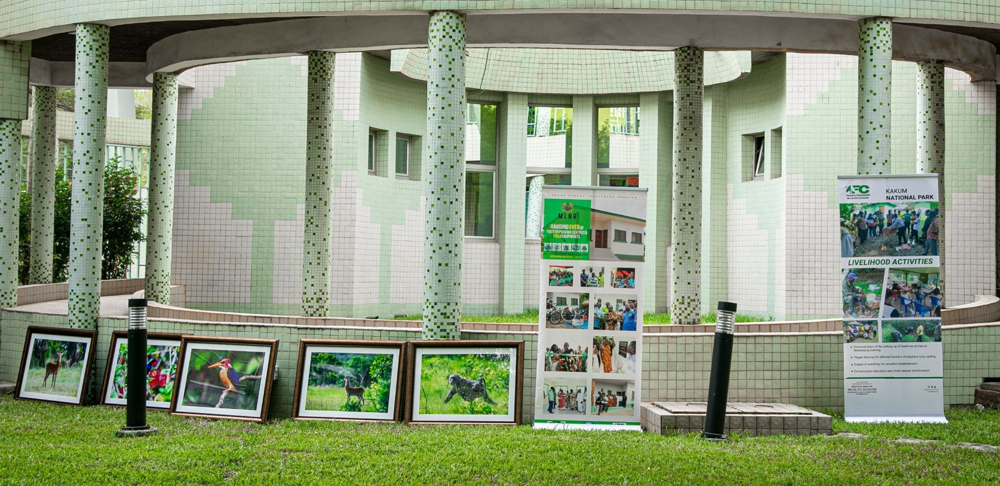
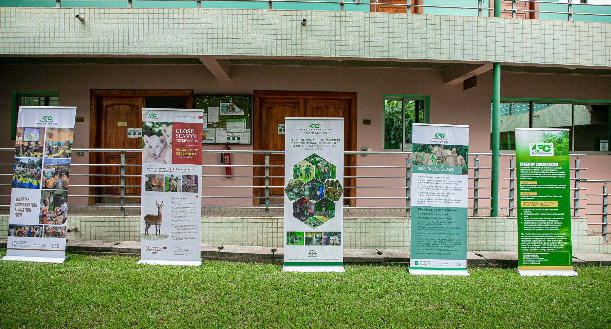

GHANA / WORLD WILDLIFE DAY 2021
A conservation message.
Made wearable.
I designed the World Wildlife Day 2021 T-shirt artwork. This project brings together the printed shirts, event photographs and supplied wildlife display materials.

The printed T-shirt design
The same illustrated design appears on yellow, green and red shirts. Photography credit is not claimed.
View full size ↗
T-shirts at the event
Supplied photograph showing the design being worn. Photography credit is not claimed.
View full size ↗
Event group photograph
Supplied photograph providing event context. Photography credit is not claimed.
View full size ↗RELATED DISPLAY MATERIALS
Wildlife displays and event setting.
The supplied banner mockup and event photographs are presented together below. The photographs show printed displays in the event setting. They do not establish responsibility for event organisation.

Wildlife display banner mockup
Supplied project material. Individual banner titles and design responsibilities can be expanded once confirmed.
View full size ↗
Display installation photograph
Supplied project material. Individual banner titles and design responsibilities can be expanded once confirmed.
View full size ↗
Printed wildlife banners at the event
Supplied project material. Individual banner titles and design responsibilities can be expanded once confirmed.
View full size ↗Written retrospectively from my confirmed T-shirt design contribution and the supplied images. Attendance, campaign impact and production quantities are not reported.
Explore more graphic design →